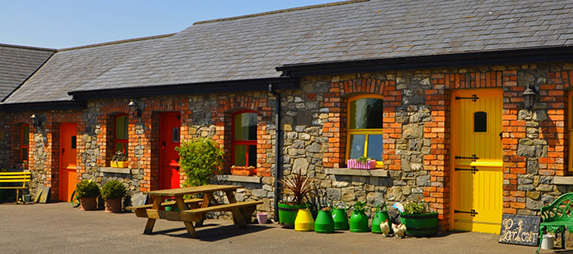

Slane Farm Hostel And Cottages

Harlinstown House, Slane, Co. Meath
Tel: 041 9884985
Email: info@slanefarmhostel.ie
Farm Hostel and Cottages prides itself with an atmosphere of simple comfort and easy going familiarity. Next door to Slane Castle the Hostel and Cottages are an ideal base for exploring the many wonders of the Boyne Valley including Newgrange, Tara, Kells, Battle of Boyne
Guests have a choice of private rooms, dormitories ,or the 4****self catering cottages
This working farm is run by Joanne and Paddy Macken and their family who will do their utmost to make your stay an enjoyable one. If you would like to camp at Slane Farm then get in touch with us to make a booking.